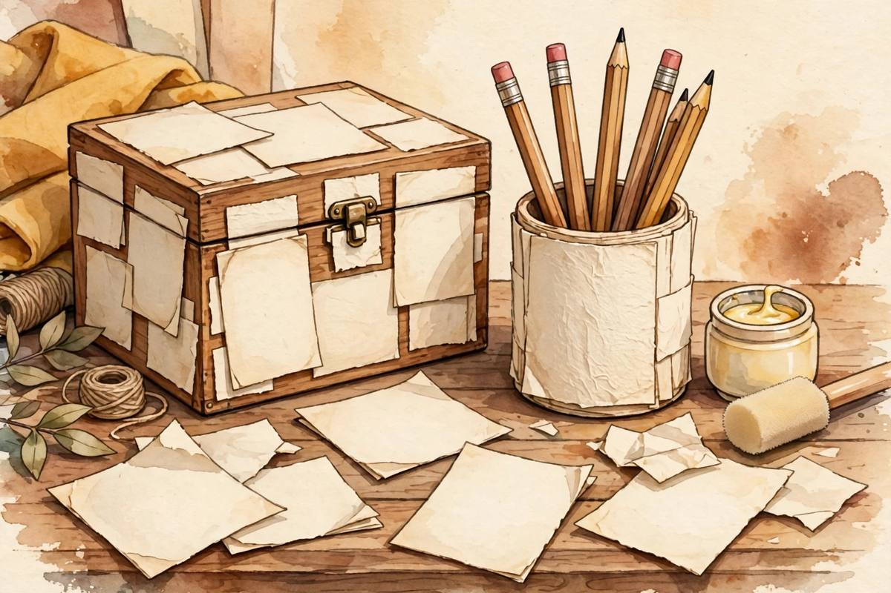

Covering Storage Boxes and Pencil Holders With Textbook Pages: The Decoupage Build

The shortcut sounds harmless: any page, any glue, one afternoon, done. It is also how a good textbook gets spent on a box that peels by Friday. Decoupage guides cheerfully list book pages as a material and then move on, as if every page in every textbook behaves the same way under a wet brush. Textbook pages do not. Some are matte and thirsty. Some are coated and slick. Some carry ink that has never been asked to survive water. The three mistakes below account for nearly every failed box, and each one is cheaper to catch before the first page is torn out.
Mistake 1: Covering first, testing never
Glossy paper is the known troublemaker. One box guide warns plainly to test the paper first because some glossy paper can be difficult to glue down, and a paper discussion puts the reason bluntly: if the paper is slick or coated, the paste may not stick to the surface. The recommended move is a test run on a piece of the same paper, a small corner, as a mock up.
Ink is the second half of the same test. Because decoupage glue is water based, the paper has to take a little water without dissolving, and the ink has to survive contact with water without fading or smudging. The documented test is simple: brush water over a scrap piece several times, then look at it honestly. Dissolving paper or smudged ink is a fail, and a fail on a spare page costs one page. A fail discovered on the box costs the whole layout.
Mistake 2: Guessing the page count
No box guide in the research for this piece counts pages at all, which is odd, because the book is the material budget. Count it before glue, using the dry layout the box guides already recommend: lay out the design first, because once gluing starts, the design cannot be changed.
| Surface | How to count it | What gets recorded |
|---|---|---|
| Box sides and bottom | Dry lay whole or torn pages over each face, one face at a time | Pages per face, added up |
| Box lid | Dry lay the top and the lid edges separately | Pages for the lid, kept apart from the body count |
| Pencil holder | Wrap one page around the curve dry and mark where it meets itself | Pages per full wrap, plus the base circle |
| Test page | One spare page for the water and glue test | 1 page, spent on purpose |
The dry count is the bill. If the bill empties a chapter worth keeping, the project shrinks to the pencil holder, or waits for a book that is already falling apart. Old, damaged books are the documented source for this work, and that is not a suggestion to be improved on.
Mistake 3: Loading the box while the finish is still curing
Dry and cured are different words because they are different states. Plaid, the manufacturer of Mod Podge, puts thin coats at touch dry in about 20 to 30 minutes, advises gentle handling for the first 24 hours, and says full cure develops over several weeks, depending on climate and how many coats were applied. A box guide that says allow at least 24 hours before calling varnish cured is describing the gentle handling window, not the finish line. Pencils can wait, and nothing heavy gets stacked on a fresh lid while the finish is still soft.
Test the page before the book pays for it: the decision
Matte, uncoated text page, ink steady under a wet brush: use it. This is the page the build is written for.
Glossy or coated page, or a colour plate: test a corner with glue on a scrap of the same stock first. If the piece slides, lifts at the edges, or refuses to sit flat, leave that section in the book. Coated stock that fails the test is not a challenge to use more glue on.
Very thin, soft page: handle with care or skip it. Very soft paper is harder to glue down flat without wrinkles, and wet paper tears more easily than dry paper, especially under a brush.
Thick, stiff page: save it for flat box faces. Paper that is too thick is hard to lay flat around a round form, while sturdier paper is fine on flat or nearly flat surfaces.
Adhesive and finish: the comparison
| Option | Mix or form | Finish choices | Timing to respect |
|---|---|---|---|
| Mod Podge | Ready to use glue, sealer, and finish in one product | Finishes from matte to gloss, plus dishwasher safe and outdoor formulas | Touch dry about 20 to 30 minutes per thin coat; gentle handling for 24 hours; full cure over several weeks |
| Diluted PVA | One part glue to one part water in one guide; equal parts school glue and water in another | No finish range stated in the sources; the glue layer itself is the varnish | Box guide timing: brush a final layer over the whole item and allow at least 24 hours |
Either adhesive does the job on a matte page. The difference is control: the branded medium states its dry and cure times on the record, and offers a matte finish that suits old paper, while the diluted glue is the cheapest option in the sources and asks the maker to judge readiness by touch.
Tools and materials
- A wooden box, a heavy cardboard box, or a shoe box, plus a tin or cardboard pencil holder
- Textbook pages that passed the test above, plus one spare test page
- Decoupage medium or diluted PVA, from the comparison table
- A flat 1 to 2 inch sponge or flat brush
- Scissors, and a ruler for straight cuts
- Sandpaper in the 160 to 220 grit range, for a wooden box
- A damp, lint free cloth
- Optional primer or paint, if bare patches will show between pages
On surfaces, the sources agree on the order of preference. Wood, especially soft wood, is the best material to decoupage onto, and cardboard and metal are both workable, which is what makes the box and the holder a fair pairing. One warning belongs here, before any glue opens: too much glue on lightweight cardboard makes it wrinkle and bubble, so the layer on a shoe box stays thinner than the layer on wood.
Cover the box, step by step
Step 1: Prep the box. Take the lid off. On a wooden box, unscrew the hinges and set the metal parts somewhere safe, then sand rough areas until smooth and brush the dust off. Wipe the surface with a damp, lint free cloth and let it dry. Check: the surface is smooth, clean, and dry, with no splinter left to telegraph through a page.
Step 2: Paint or prime only if the layout needs it. Thin material can let the surface show through, so paint first if bare patches are part of the design. Primer also helps paper stick on wood or slick boxes. Check: any painted surface is fully dry before paper goes near it.
Step 3: Cut or tear, then dry lay the whole design. Torn edges on book pages create layered texture when overlapped; cut edges give the cleaner, fitted look. Lay every piece in place before glue, lid counted separately, as the page count table sets out. Check: the count is recorded and the design is settled, because it cannot change once gluing starts.
Step 4: Glue one face at a time. Brush a thin layer of adhesive across one face only, with the flat brush. Adhesive painted over the whole box at once dries before the later pages arrive. Check: the layer is thin and even, with no puddles at the corners.
Step 5: Place, smooth, and seal each piece. Lay the page onto the wet face, centre it as it goes down, and smooth out bubbles with the brush or a finger, working gently because wet paper tears easily. Then brush a thin layer over the top of the piece to seal it. Check: edges sit flat, and no bubble survives under a title or a diagram worth reading.
Step 6: Work around the box, then varnish. Repeat face by face, letting each side be handled in its own time. When every face is covered, brush a layer of adhesive over the whole item and let it dry, then add one more thin layer as the finish coat. Check: the whole surface has an even sheen, matte or gloss, with no dry island missed.
The pencil holder variant: working around a curve
A holder is the same build wrapped around a cylinder, with two changes. First, piece size shrinks: smaller pieces follow a curve that a full stiff page will not, which is the round form problem from the page decision, solved by cutting rather than forcing. Second, the seam gets planned in the dry wrap: wrap, mark the overlap, and put that seam at the back, where the holder meets the desk clutter. Cover the outside in overlapping pieces from bottom to rim, seal with the same thin top layer, and cut a separate circle of page for the base if the bottom will be seen. Leave the inside bare on a tin holder that will hold metal nibs and blades, or line it only if the holder is cardboard and the contents are pencils alone.
What success looks like
Pages lying flat on every face, edges sealed, text still legible under a matte or gloss finish that dried clear. A lid that opens without peeling its neighbour. A holder with its seam at the back and no lifted corner at the rim. And a box that sat empty, handled gently, for its first 24 hours, while the finish did the slow part of its work over the weeks that follow. The book that paid for it was already damaged, the page count was known before the first tear, and not one good chapter was spent finding out that coated paper does not stick.
— Tom Reilly, Home & DIY Writer